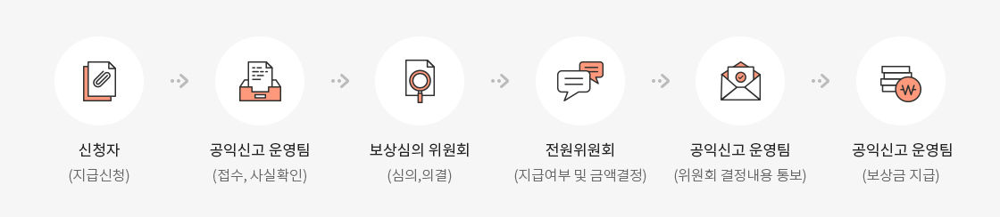
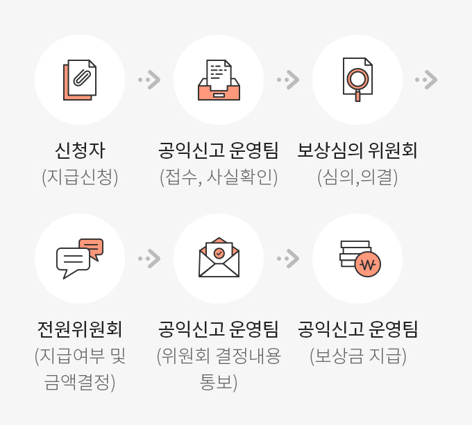

공익신고안내
무역보험공사는 공익침해행위와 관련된 법률에 따라 설치된 공공기관은 아니나, 공익신고의 활성화와 공익신고자 보호제도의 인식확산을 위해 공익신고처리 및 신고자 보호 등에 관한 운영요령을 제정 및 공익신고 관련 자료 안내 등을 지원하고 있습니다.
공익신고의 정의
(「공익신고자 보호법」 제2조제2호 관련)
- 공익침해행위가 발생 또는 발생할 우려가 있다는 사실을 신고ㆍ진정ㆍ제보ㆍ고소ㆍ고발하거나 공익침해행위에 대한 수사의 단서를 제공하는 행위
공익침해행위 정의
(「공익신고자 보호법」 제2조제1호 관련
- 국민의 건강과 안전, 환경, 소비자의 이익 공정한 경쟁 및 이에 준하는 공공의 이익을 침해하는 행위로서, 공익신고 대상법률에 따라 벌칙 또는 행정처분의 대상이 되는 행위
※ 「시설물의 안전관리에 관한 특별법」, 「식품위생법」, 「자연환경보전법」, 「의료법」 등 471개 법률
공익침해행위 예시
건강분야
불량식품 제조·판매 등
안전분야
부실시공 등
환경분야
대기오염 물질 불법배출 등
소비자이익분야
보이스피싱, 보험사기 등
공정경쟁분야
기업간 담합 등
공공의 이익분야
거짓 채용공고 등
공익침해행위 신고접수 기관
(「공익신고자 보호법」 제6조, 동법 시행령 제5조 관련)
- 국민권익위원회, 수사기관, 국회의원
- 공익침해행위를 하는 사람이나 기관·단체·기업 등의 대표자 또는 사용자
- 공익침해행위에 대한 지도·감독·규제 또는 조사 등의 권한을 가진 행정기관이나 감독기관
- 공익침해행위와 관련된 법률에 따라 설치된 공사ㆍ공단 등 공공단체
공익신고 처리 절차(국민권익위원회에 접수한 경우)
(「공익신고자 보호법 시행령」 제8조 관련)
- 신고 접수 60일 이내에 사실 확인을 마친 후 조사·수사기관에 이첩하고, 처리 결과를 신고자에게 통보
공익신고대상 및 보호보상제도 안내 팝업
공익신고대상
공익신고의 정의
-
(「공익신고자 보호법」 제2조제2호 관련)공익침해행위가 발생 또는 발생할 우려가 있다는 사실을 신고ㆍ진정ㆍ제보ㆍ고소ㆍ고발하거나 공익침해행위에 대한 수사의 단서를 제공하는 행위
공익침해행위 정의
-
(「공익신고자 보호법」 제2조제1호 관련
국민의 건강과 안전, 환경, 소비자의 이익 공정한 경쟁 및 이에 준하는 공공의 이익을 침해하는 행위로서, 공익신고 대상법률에 따라 벌칙 또는 행정처분의 대상이 되는 행위
※ 「시설물의 안전관리에 관한 특별법」, 「식품위생법」, 「자연환경보전법」, 「의료법」 등 471개 법률
공익침해행위 예시
건강분야
불량식품 제조·판매 등
안전분야
부실시공 등
환경분야
대기오염 물질 불법배출 등
소비자이익분야
보이스피싱, 보험사기 등
공정경쟁분야
기업간 담합 등
공공의 이익분야
거짓 채용공고 등
보호·보상제도
한국무역보험공사 공익신고 처리 및 신고자 보호 등에 관한 운영 요령에 의거, 신고자는 국가 또는 지방자치단체에 직접적인 수입의 회복 또는 증대를 가져오거나 이에 대한 법률관계가 확정된 것을 알게된 경우에 국민권익위원회에 보상금 지급을 신청할 수 있도록 통지해드립니다.(다만, 법 제2조제7호의 내부 공익신고자에 해당하는 경우에 한함)
보상금 지급사유
공익신고로 인하여 다음의 어느 하나에 해당하는 부과 또는 환수 등을 통하여 국가 또는 지방자치단체의 직접적인 수입의 회복 또는 증대를 가져오거나 그에 관한 법률관계가 확정된 때 지급
- 벌칙 또는 통고처분
- 몰수 또는 추징금의 부과
- 과태료 또는 이행강제금의 부과
- 과징금의 부과
- 국세 또는 지방세의 부과
- 부담금 또는 가산금 부과 등의 처분
- 손해배상 또는 부당이익 반환 등의 판결
- 손해배상 또는 부당이득 반환 등에 의한 환수
국민권익위원회 보상금 지급기준
| 보상대상가액 | 지급기준 |
|---|---|
| 1억원 이하 | 20% |
| 1억원 초과 5억원 이하 | 2천만원 + 1억원 초과금액의 14% |
| 5억원 초과 20억원 이하 | 7천6백만원 + 5억원 초과금액의 10% |
| 20억원 초과 40억원 이하 | 2억2천6백만원 + 20억원 초과금액의 6% |
| 40억원 초과 | 3억4천6백만원 + 40억원 초과금액의 4% |
- 개별 공익침해행위로 인하여 산정된 보상금이 20만원 미만인 경우에는 지급하지 아니하고, 보상금의 지급 한도액은 2018.5.1. 신고부터 30억원임
- 보상대상가액 : 부과 또는 환수등을 통하여 국가 또는 지방자치 단체의 직접적인 수입의 회복 또는 증대를 가져오거나 그에 관한 법률관계가 확정된 금액
보상금 지급절차


- 신청자(지급신청)
- 공익신고 운영팀(접수, 사실확인)
- 보상심의 위원회(심의,의결)
- 전원위원회(지급여부 및 금액결정)
- 공익신고 운영팀(위원회 결정내용 통보)
- 공익신고 운영팀(보상금 지급)
보상금 신청 기한
국가 또는 지방자치단체의 수입의 회복이나 증대에 관한 법률관계가 확정되었음을 안 날부터 3년 이내, 그 법률 관계가 확정된 날부터 5년 이내(다만, 2021.10.21. 이전 접수된 공익신고의 경우에는 법률관계가 확정되었음을 안 날부터 2년 이내, 그 법률 관계가 확정된 날부터 5년 이내)
보상금 상담 및 신청방법
- 전화 : (국번없이) 110 또는 1398
- 우편 : (30102) 세종특별자치시 도움5로 20 정부세종총사 7동, 국민권익위원회 신고자보상과
- 팩스 : 044-200-7949
- 온라인 : 청렴포털_부패공익신고 홈페이지 “상담신청” 및 "보상신청"